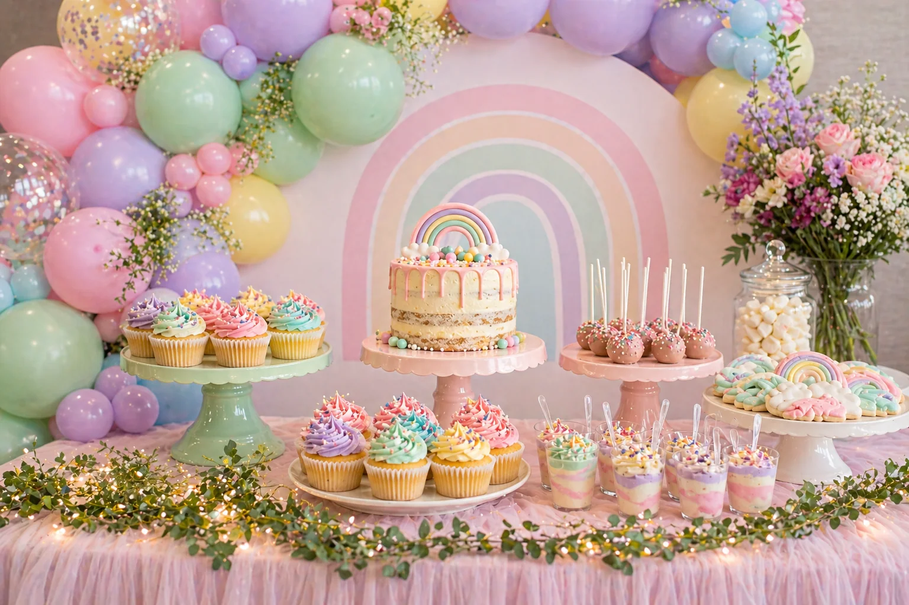
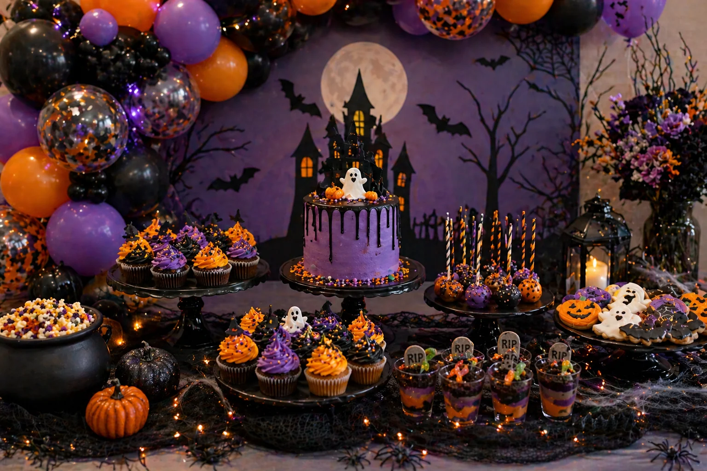

A children's party dessert table is more than somewhere to place the cake. It can become the main feature of the room, especially when the balloons, backdrop, cupcakes, sweets and cake stands all work together.
At Little Moment Studio, our focus is balloon styling and celebration setups. We do not make cakes or cupcakes ourselves, but we know how important the dessert table is to the overall party look. A well-styled table helps everything feel coordinated — from the balloon garland to the cupcakes, cake, sweets and party props.
If you would like cupcakes or a cake to complement your balloon display, we are happy to recommend a trusted local cake maker.
Why Dessert Table Styling Matters
A dessert table gives the party a central focus. It is often where people take photos, gather around the cake, sing happy birthday and enjoy the treats.
| Element | Why It Matters |
|---|---|
| Balloons | Create height, colour and impact |
| Backdrop | Frames the table for photos |
| Cake | Becomes the centrepiece |
| Cupcakes | Add colour, detail and easy portions |
| Cake stands | Create different heights across the display |
| Sweets and treats | Fill gaps and add variety |
| Props | Reinforce the theme |
| Table styling | Makes everything feel polished |
The goal is not to make the table overcrowded. The goal is to make everything feel balanced, colourful and easy to enjoy.
Start with the Party Theme
Before choosing the cake, cupcakes or sweets, decide the theme. Once you know the theme, every detail becomes easier to choose.
| Theme | Good Dessert Table Style |
|---|---|
| Rainbow party | Pastel balloons, rainbow cake, colourful cupcakes |
| Princess party | Pink, ivory, gold, florals, crown toppers |
| Dinosaur party | Green, beige, orange, jungle props |
| Mermaid party | Teal, lilac, pink, shells, pearls |
| Safari party | Sage, beige, brown, animal toppers |
| Teddy bear party | Cream, beige, soft brown, neutral styling |
| Halloween party | Black, orange, purple, spooky treats |
| Christmas party | Red, green, white, gold, festive cupcakes |
| First birthday | Soft pastels, number toppers, smash cake |
| Baby shower | Sage, ivory, blush, baby-themed details |
Choose a Clear Colour Palette
Most dessert tables look best with three to five colours. Use these colours across the balloons, cupcakes, cake details, tablecloth, sweet pots, cake stands, toppers, flowers and props. You do not need every item to use every colour — it usually looks better when the colours are repeated gently across the whole display.
| Party Style | Colour Palette |
|---|---|
| Pastel rainbow | Pink, mint, lilac, yellow, baby blue |
| Soft baby shower | Ivory, sage, blush, champagne |
| Mermaid party | Teal, aqua, lilac, blush pink, pearl |
| Halloween | Black, orange, purple, ivory |
| Christmas | Green, white, red, gold |
| Luxury birthday | Ivory, blush, champagne, gold |
| Safari party | Sage, beige, cream, soft brown |
Build the Table Around the Cake
The cake is usually the centrepiece, so place it first. If the cake has a topper, rainbow, name plaque or number, make sure it is not hidden by balloons or props.
| Cake Position | Best For |
|---|---|
| Centre of the table | Classic birthday setup |
| Slightly raised at the back | Better for photos and larger tables |
| On a tall cake stand | Adds height and importance |
| In front of a backdrop | Creates a strong photo moment |
For children's parties, a cake with matching cupcakes can make the table feel fuller without needing a very large cake.

Add Cupcakes for Colour and Easy Portions
Cupcakes are perfect for children's parties because they are easy to serve and can match almost any theme. They also bring the balloon colours onto the table.
- Buttercream swirls
- Number and letter toppers
- Fondant shapes
- Edible pearls and sprinkles
- Character and themed details
- Colour-matched cupcake cases
| Balloon Colours | Cupcake Idea |
|---|---|
| Pink, lilac and mint | Pastel buttercream swirls |
| Teal, purple and pink | Mermaid tail cupcakes |
| Black, orange and purple | Halloween swirl cupcakes |
| Red, white and blue | Tri-colour swirl cupcakes |
| Sage, ivory and blush | Baby shower fondant cupcakes |
For more cupcake ideas by theme, see our guides to birthday cupcake ideas, mermaid cupcake ideas, Halloween cupcake ideas, Christmas cupcake ideas and Easter cupcake ideas.
Use Cake Stands to Create Height
Cake stands make a dessert table look styled rather than flat. A good rule is: tallest item at the centre or back, medium items to the sides, smaller treats at the front. This makes the table easier to view and photograph.
| Stand Type | Best For |
|---|---|
| Tall cake stand | Main cake |
| Medium cake stand | Cupcakes |
| Low tray or board | Cookies or sweets at the front |
| Clear risers | Modern and minimal displays |
| Wooden boards | Rustic or safari themes |
| Black stands | Halloween |
| Gold stands | Luxury birthdays or Christmas |
| White stands | Baby showers and pastel themes |
Add a Balloon Garland or Backdrop
The balloon display creates the biggest visual impact on a dessert table. A balloon garland adds height, repeats the colour palette and makes a small table feel far more impressive. If the dessert table is the main feature of the party, the garland should sit behind or around it rather than too far away.
For children's parties, balloons work especially well with circular backdrops, sailboard backdrops, number props, rainbow panels, personalised signs and themed cut-outs.
Placement tip
A garland placed directly behind the cake creates a strong photo backdrop. A garland placed above the table on a frame or arch keeps the food visible while still adding height and colour around the display.
Include Different Treat Types
A dessert table looks more interesting when it includes a mix of shapes and heights. You do not need everything — a simple table can work beautifully with a cake, cupcakes, cake pops, cookies and sweet pots.
| Treat | Why It Works |
|---|---|
| Cake | Main centrepiece |
| Cupcakes | Easy portions and colour throughout |
| Cake pops | Adds height on sticks and themed detail |
| Cookies | Good for themed shapes |
| Sweet pots | Easy for children to help themselves |
| Meringues | Light pastel texture and height variation |
| Brownie bites | Adds a richer variety |
| Donuts | Fun and easy to display on a stand |
Themed Table Examples
Pastel Rainbow
Pastel balloon garland, rainbow cake, pastel swirl cupcakes, cake pops, rainbow cookies, sweet pots, white or pink cake stands, soft flowers and a pastel tablecloth. Colour palette: pink, mint, lilac, yellow and baby blue. Works beautifully for birthdays, first birthdays and children's parties.
Mermaid Party
Teal, lilac and pink balloons, shell decorations, mermaid tail cupcakes, shell and pearl rosettes, shimmer cake, pearl sweets, starfish props, white cake stands and iridescent table fabric. Colour palette: teal, aqua, lilac, blush pink and pearl white.
Baby Shower
Sage, ivory and blush balloons, baby shower cake, baby feet cupcakes, teddy bear toppers, pearl sprinkles, soft florals, white cake stands and neutral table linen. Colour palette: sage, ivory, blush and champagne. Creates a soft, elegant look that works beautifully for photos.
Halloween Children's Party

Black, orange and purple balloon garland, haunted house-style backdrop, Halloween cake, mummy cupcakes, orange and purple swirl cupcakes, bat toppers, spooky cookies, cake pops, sweet cups, pumpkin props and black cake stands. Colour palette: black, orange, purple and ivory. Works well when the table feels fun and spooky rather than too frightening.
Keeping the Table Balanced
Try to balance height, colour, empty space, large and small items, and soft versus bold details across the table. You do not need perfect symmetry, but the display should feel visually even from left to right.
| Left Side | Centre | Right Side |
|---|---|---|
| Cupcake stand | Main cake | Cake pops |
| Sweets | Backdrop and balloons | Cookies |
| Florals or props | Props |
Empty space is not wasted space
A table needs breathing room. A few well-chosen items with space between them often looks more premium than a table packed with every treat available. Less is usually more once the balloons and backdrop are in place.
Using Props Carefully
Props can make a dessert table feel more themed, but too many can make it look cluttered. Choose a few strong props rather than lots of small unrelated items. For children's parties, safety matters too — avoid anything sharp, fragile or too close to candles.
Good props include mini blocks, teddy bears, pumpkins, shells, star shapes, flowers, toy animals, small signs, number props, themed plates, lanterns and fairy lights.
Think About Practicality
A dessert table still needs to work during the party. Before finalising the layout, consider:
- Can children reach the treats easily?
- Are cake pops stable and secure?
- Will buttercream soften in a warm room?
- Is the cake easy to cut and serve?
- Is there space for plates and napkins?
- Will the table be in direct sunlight?
- Are balloons kept away from candles or heat sources?
Beautiful styling is important, but the table should still be practical and easy to use on the day.
Styling Watch-Outs
Too many colours
More than five colours can make the table feel chaotic. Choose three to five and repeat them carefully across every element.
Everything the same height
If every item sits flat on the table, the display can look dull. Cake stands and risers at different heights create the layered look that makes a table feel styled.
Too many props
Props should support the theme, not hide the food. A few well-chosen items work far better than lots of small unrelated pieces.
No clear centrepiece
The cake or backdrop should usually be the obvious focal point. If everything is the same size and importance, the eye does not know where to go.
Not enough empty space
Empty space can make a display look more premium. Resist the urge to fill every gap.
Your Questions Answered
What should go on a children's party dessert table?
A cake as the centrepiece, cupcakes for easy portions and colour, cake pops for height, themed cookies, sweet pots and one or two props that reinforce the party theme. A simple setup of cake, 12 cupcakes, cake pops and sweet pots can make a beautiful table without being overcrowded.
How many colours should a dessert table have?
Three to five colours work best. Choose the colours from the party theme and repeat them gently across the balloons, cake, cupcakes, sweet pots and table linen. More than five colours can make the table feel disjointed.
How do I create height on a dessert table?
Use cake stands and risers at different heights. Place the tallest item at the centre or back, medium stands to the sides and lower trays or boards at the front. This creates a layered effect that is easy to view and photograph.
How far in advance can I set up a dessert table?
Props, cake stands, table linen, backdrops and balloons can go up the morning of the party or the evening before. Cakes and cupcakes with buttercream should be added on the day, especially in warm rooms. Sweet pots and cookies can go out a little earlier.
The most successful children's party dessert tables have one thing in common: the balloons, cake, cupcakes and table details all speak the same colour language. It does not need to be elaborate — a clear theme, a limited palette and a few well-chosen elements repeated across the display will create a table that feels genuinely considered.
For more on coordinating cupcakes with your balloon display, see our guide to matching cupcakes with your balloon display. For piping ideas, see our beginner piping tips guide.
Planning a Children's Party in Sittingbourne or Kent?
Little Moment Studio creates balloon garlands, backdrops and coordinated party setups across Sittingbourne and Kent. We can also recommend a trusted local cake maker to complete your dessert table.